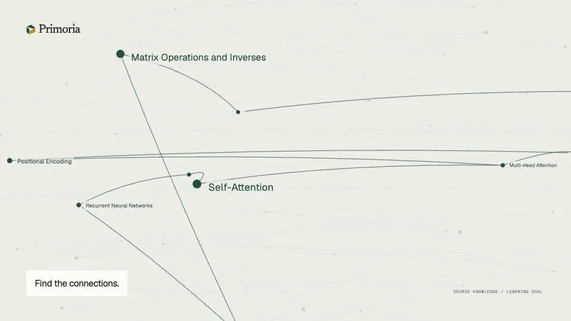
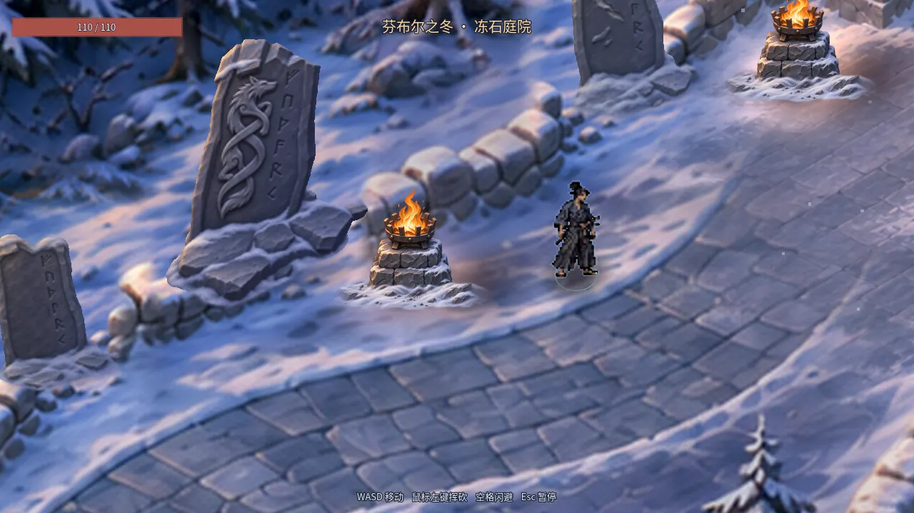
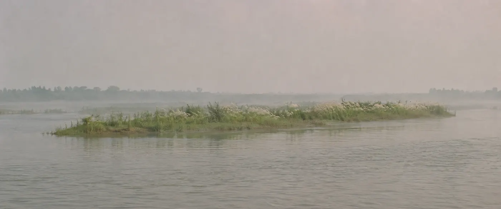
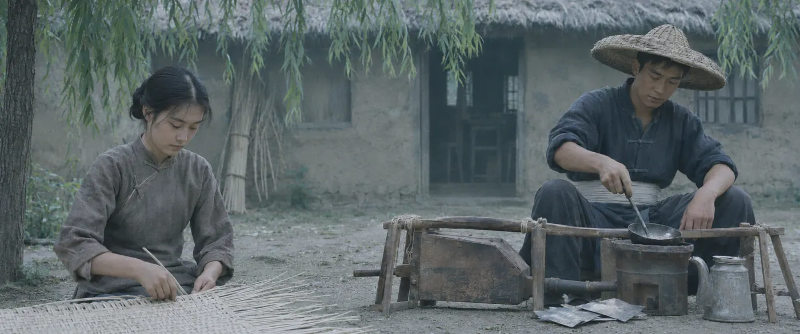

Zhang Fan (Charles) — Portfolio 2026
Agents,
Games &
StoriesIT student at James Cook University, Singapore.
I build AI agents, make games,
and am making a short film with AI.
(About)
I build systems that make hard things feel playable — an AI tutor that turns a question into a lesson, and a roguelite where every drop rewrites your build.
- Study
- Bachelor of IT, James Cook University Singapore · GPA 6.17 / 7 · JCU Merit Scholarship
- Tools
- Python · TypeScript · React / Next.js · LangGraph · PostgreSQL · Godot
- Next
- Open to a 4+ month full-time internship from mid–late January 2027 — AI applications, agent engineering, full-stack & backend
01 / 03 AI learning platform — Capstone — 2026
Primoria
★ HackaStone 2026 Grand Finalist · Amsterdam
Say what you want to learn and Primoria lays the path. In our team capstone I designed the AI tutor's architecture and built its core runtime.
- A LangGraph tutor routes intent to tools; long course generation runs as background jobs, with run state kept in PostgreSQL.
- Hybrid retrieval over uploaded lectures — BM25 + pgvector — so answers quote the file and page.
- The model fills validated parameters for 49 reusable teaching components instead of writing whole lessons.
TypeScript · Next.js · LangGraph · PostgreSQL · pgvector
primoria.app ↗



02 / 03 Game in development — Godot
诸界余烬Embers of the Realms
A Norse-myth action roguelite I'm building in Godot: Hades-style rooms, gods whose boons slot into your build, and gear drops that change how you play.
- Designed the gear system — affixes, set bonuses, and how each drop feeds back into boon choices and combat balance.
- Built the run loop: rooms, XP and level-up picks, god boons and fusion skills.
- Art direction across painted card art, snow-temple environments and stylised 3D characters.
Godot · GDScript · Blender · AI-assisted art pipeline




03 / 03 AI short film — In production
大淖记事A Tale of Big Nur



An adaptation of Wang Zengqi's 1981 novella, made with image and video models: a realistic film look, sparse dialogue, and the original prose as voice-over.
Adaptation · storyboard · look development · generation
(More work)
- LuminaVocabulary & IELTS practice app I built for myselfWeb · Android
- Conser-visionWildlife image classification — augmentation & ensemblingDeep learning · 2026
- Yellow RiverDischarge modelling on monitoring data — provincial 3rd prizeCUMCM · Python
- This siteSplit-screen scroll engine, written from scratchHTML · CSS · JS
Résumé
Download CV · PDF ↗Education
- 2025 — 2026James Cook University, SingaporeBachelor of Information Technology · GPA 6.17 / 7 · JCU Merit Scholarship · coursework completes Dec 2026
- 2022 — 2025Fuzhou Melbourne PolytechnicInformation Technology, Sino-Australian joint programme
Experience
- 2027 →Looking for an internshipFull-time, 4+ months, from mid–late January 2027 · AI applications, agents, full-stack & backend
- Mar — Jul 2025Dongguan Yuhang Precision MachineryCNC programming intern · generated machining programs from part drawings with CAM software
Honours
- 2026HackaStone Grand FinalistTeam Primoria, representing JCU Singapore
- CUMCMProvincial Third PrizeMathematical Contest in Modeling · Yellow River discharge (team)
- CampusFirst Place, C ProgrammingCampus programming competition
- Programming
- Python · TypeScript · C · Git · React · Next.js · PostgreSQL
- Applied AI
- LangGraph · tool calling · RAG · vector retrieval · fastai
- Games & film
- Godot · GDScript · Blender · image & video generation